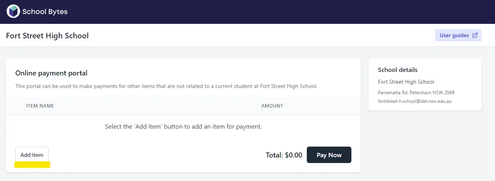
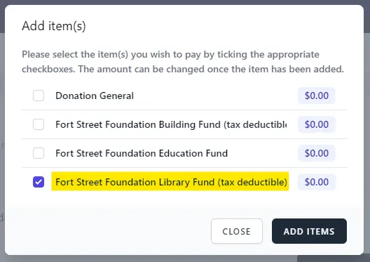

The Fort Street Foundation
The Fort Street Foundation was formed in 1998 as the brainchild of a group of 1949 Fortians who were returning to the School for their 50th year anniversary. It is a registered charity and supports the school financially for initiatives including the development of buildings and facilities. The Foundation runs three funds: the Building Fund, the Library Fund (both tax deductible) and the Education Fund.
They saw the need to establish a way to raise funds for the school but as a separate entity. Then, as now, the focus was to support the school by raising money for a wide range of projects including the development and refurbishment of facilities, bursaries and student support. The Foundation is governed by a Board consisting of Fortian alumni and representatives of the school community.
Students can apply to the Foundation for a grant to support them participating in a co-curricular activity or representing the school in interstate or international competitions.
Donations
Donations to the Fort Street Foundation can be made using this link to online payments (opens in new window) .
You will need to select Add Item from the bottom left hand corner.

A pop up box will appear where you can select Fort Street Foundation Library Fund (tax deductible) and tick the box to the left. Then click on Add Item.

You can then enter the amount you wish to pay and select Pay Now. After your payment is processed you will be emailed a receipt.
Alternatively you can send a cheque made payable to ‘The Fort Street Foundation’ indicating where you would like your donation to be directed. Please mail to Fort Street High School, Parramatta Road, Petersham. NSW 2049
For more assistance please contact Ms Juliette McMurray on 8585 1600 or email (opens in new window) .
Donations to the Building Fund and Library Fund are tax deductible
The Building Fund
Gifts made to the Building Fund are used to assist in financing major capital works.
In recent years this has included:
- The refurbishment of the school library
- The refurbishment of existing areas into technology spaces and additional learning areas including the "Newby" Lecture Theatre and a flexible learning space
- The building of a covered outdoor learning space with power, lighting and seating for 150
- The establishment of the “Ron Horan Museum” – an interactive area where students can research the rich history of Fort Street High School and its alumni
The Library Fund
The Foundation Library Fund is an ancillary fund registered with the ACNC. It exists solely to support The Fort Street High School library and library services. Gifts made to the School Library Fund can only be used for library purposes – books, literacy resources, training and learning activities that take place within the library space. This also includes the archives.
This includes:
- Literacy resources eg books, text books, interactive whiteboards, online learning subscriptions
- The purchase of specialised computing equipment including laptops and software
- Additional learning support staff
- Supporting the school website
- Supporting the school archival program
The Education Fund
The Education Fund is NOT tax deductible. It is used to support out of pocket expenses for students and staff involved in co curricular activities.
In recent years this has included:
- Providing bursary assistance to families in need
- Supporting the Duke of Edinburgh Award program
- The acquisition of educational equipment
- Enhancing the professional development of our teaching staff
- Providing financial support for students involved robotics, F1, music, sport and more
Many Australian companies offer a matching gifts program, where any donation made to an Australian based registered charity is matched by the employer. The Fort Street Foundation is an eligible registered charity and we encourage donors to ask their employer about registering their gifts via this program. Matching gifts is a simple and easy way to double the impact.
Online payments can be accessed here (opens in new window)
Many Australian companies offer a matching gifts program, where any donation made to an Australian based registered charity is matched by the employer. The Fort Street Foundation is an eligible registered charity and we encourage donors to ask their employer about registering their gifts via this program. Matching gifts is a simple and easy way to double the impact.
Foundation Directors
Mr Colin Long
President
Mr Mark Lindsay
Public Officer and Director
Ms Juliette McMurray
Principal
Ms David Sherwin
Staff Director
Ms Kylie Salisbury
Staff Director
Mr Don Newby
Fortians Union Director
Ms Caroline Aow
P&C Director
Ms Karen Charles
Further Director
Mr Iain Wallace
Executive Officer
Minutes
Minutes are available by request from iain.wallace@det.nsw.edu.au (opens in new window)
Reunions
Reunions are a fantastic opportunity for Fortians to reconnect with others from their year group and with the current school. If you would like to visit the school as part of your reunion activities then please contact Mr Iain Wallace on 8585 1600 (Thursdays and/or Fridays) or at iain.wallace@det.nsw.edu.au (opens in new window) .
Contact: Mr Iain Wallace Executive Officer Email: iain.wallace@det.nsw.edu.au (opens in new window)
- Newsletters Read our latest newsletter and stay connected with our school life. east
- Events Find out about school events, celebrations and what’s coming up. east